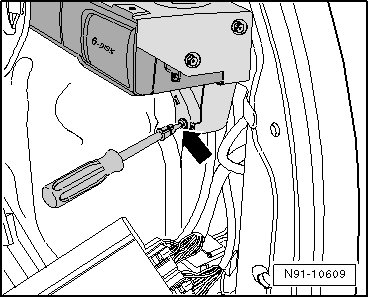
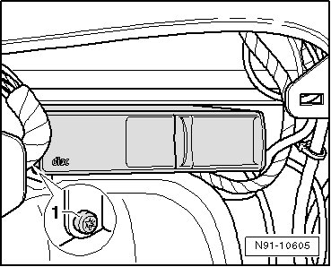
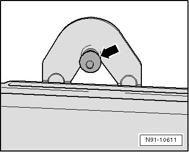
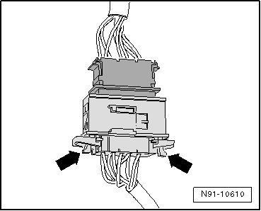

CD Changer with Bracket
CD Changer with Bracket
Removing
Before starting repair work, perform the following:
- Switch off ignition, switch off all electrical consumers and remove ignition key.
- If necessary, remove CDs remaining in the CD changer. Refer to --> Owner's Manual.
Vehicles with sound system amplifier:
- Remove sound system amplifier. Refer to --> [ Sound System Amplifier ] Sound System Amplifier.
Vehicles without sound system amplifier:
- Perform assembly sequence up to removal of amplifier to again access to the CD changer. Refer to --> [ Sound System Amplifier ] Sound System Amplifier.
Continuation for all:
- Remove bolt - arrow -.

- Remove bolt - 1 -.

- Raise CD changer together with bracket out of rear guide - arrow -.

- Release CD changer connector at points designated with - arrows - and disconnect it.

Installing:
- Reconnect CD changer connector.
When inserting CD changer bracket, note that bracket must be slid onto back of guide in side panel - arrow -.
Remaining installation in reverse order of removal.